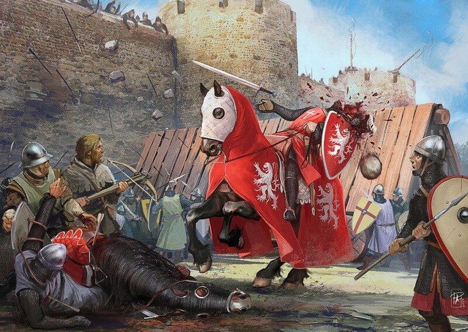

6 интересных фактов о крестовых походах
1. Крестовый поход бедноты
Поход бедноты начался стихийно. Но кашу заварил папа римский Урбан II. В Клермоне на площади он
произнёс страстную речь, которая зажгла толпу. Со слезами
на глазах понтифик живописал муки братьев-христиан на Святой земле.
Призыв папы народ подхватил с лютым энтузиазмом. Простолюдины жили тяжко: гибли от голода,
болезней, изнуряющего труда. Поход в Иерусалим воспринимался ими в буквальном смысле как путь к спасению.
К марту 1096 года тысячи одержимых священной идеей простолюдинов начали стихийно двигаться на восток.
Впереди некоторых отрядов шли гусь или коза. Считалось, что Господь через неразумных животных
может указать верующим путь. Ведь откуда голытьбе было знать, где находится Иерусалим? Религиозный пыл
народа поддерживали многочисленные проповедники. Самый известный из них — монах
из Амьена Пётр, по прозвищу Пустынник, ставший духовным лидером ополчения.
Проходя через города и деревни, крестоносцы отбирали продовольствие у своих же
собратьев-христиан. Уводили лошадей, скот, забирали ценности и имущество. Тех, кто сопротивлялся, убивали.
Женщин насиловали. Дома сжигали. Идущим в хвосте ополчения еды практически не доставалось. По ряду
свидетельств, доходило до каннибализма.
Набор для крестового похода
2. Стоимость крестовых походов
Участие в Крестовых походах стоило довольно дорого, а прибыли почти никогда не приносило.
Затраты соответствовали статусу участника. Так, рыцарь должен был полностью экипировать и себя, и своих
спутников и слуг, а также кормить их во время всего пути туда и обратно. Бедняки надеялись на возможность
подработать в походе, а также на подаяния более обеспеченных крестоносцев и, конечно, на добычу.
Награбленное в крупном сражении или после успешной осады быстро тратилось на провизию и другие необходимые
вещи.
Историки подсчитали, что рыцарь, собравшийся в Первый крестовый поход, должен был собрать
сумму, равную своим доходам за четыре года, и в сборе этих средств часто принимала участие вся семья.
Приходилось закладывать, а иногда даже продавать свои владения. Например, Готфрид Бульонский, один из
лидеров Первого крестового похода, был вынужден заложить родовое гнездо — Бульонский замок.
Радостные крестоносцы идут в поход, зная, что продали для него дом, жену и троих
детей.
3. Азартные игры
Настольные игры, в которые почти всегда играли на деньги, в Средние века были одним из главных
развлечений как аристократов, так и простолюдинов. Крестоносцы и поселенцы государств крестоносцев не были
исключением: играли в кости, шахматы, нарды и мельницу (логическую игру для двух игроков). Как сообщает
автор одной из хроник Вильгельм Тирский, король Балдуин III Иерусалимский любил играть в кости больше, чем
приличествует королевской чести.
Во время осады Антиохии в 1097–1098 годах двое крестоносцев, мужчина и женщина, заигрались в
кости. Воспользовавшись этим, турки совершили неожиданную вылазку из города и забрали обоих в плен.
Отрубленные головы несчастных игроков потом перебросили через стену в лагерь крестоносцев.
Но игры считались небогоугодным делом — особенно когда речь шла о священной войне. Ричард Львиное
Сердце, также считал, что игры могут помешать успешному исходу экспедиции, поэтому установил строгие
правила: никто не имел права проиграть больше 20 шиллингов за день.Правила, ограничивавшие игры, были и у
членов монашеских орденов — тамплиеров и госпитальеров. Тамплиеры могли играть только в мельницу и только
ради удовольствия, а не на деньги. Госпитальерам было строго запрещено играть в кости — «даже на
Рождество».
Беззаботные крестоносцы играют, не зная, что их ждёт.
Коварные инструменты порабощения сознания
4. Могли ли в походах участвовать женщины?
Да, хотя их количество сложно подсчитать. Известно, что в 1248 году на одном из кораблей,
которые во время Седьмого крестового похода везли крестоносцев в Египет, на 411 мужчин приходилось 42
женщины.
Некоторые женщины участвовали в Крестовых походах вместе с мужьями; некоторые (обычно вдовы,
которые в Средние века пользовались относительной свободой) ехали сами по себе. Как и мужчины, они
отправлялись в походы, чтобы спасти душу, помолиться у Гроба Господня,
посмотреть на мир, забыть о домашних неурядицах, а также прославиться.
В боевых действиях женщины участвовали весьма активно. Арабские источники упоминают
женщин-крестоносцев, сражавшихся в
доспехах и на коне.
Женщины в доспехах ничем не отличались от мужчин. Всё остальное - фансервис
5. Враги крестоносцев - еретики?
С середины XII века папы начали объявлять Крестовые походы не только против мусульман, но и
против язычников, еретиков, православных и даже католиков. Например, так называемые Альбигойские
крестовые походы на юго-западе современной Франции были направлены против катаров — секты, не признававшей
Католическую церковь. За катаров вступились их соседи-католики — они в основном и воевали с крестоносцами.
Так, в 1213 году в битве с крестоносцами погиб король Арагона Педро II, получивший прозвище Католик за
успехи в борьбе против мусульман.
А в «политических» Крестовых походах на Сицилии и юге Италии врагами
крестоносцев с самого начала были католики: папа обвинил их в том, что они ведут себя «хуже неверных»,
потому что не подчиняются его приказам.

Католики выясняют, кто больший католик.
6. Ну очень странный поход
Император Священной Римской империи Фридрих II дал обет принять участие в Крестовом походе, но
исполнять его не торопился. В 1227 году он наконец-то отплыл в Святую землю, но серьезно заболел и повернул
обратно. За нарушение обета папа римский Григорий IX тут же отлучил его от церкви. И даже через год, когда
Фридрих снова сел на корабль, папа не отменил наказание.
В это время на Ближнем Востоке шли междоусобные войны, начавшиеся после смерти Саладина. Его
племянник аль-Камиль вступил в переговоры с Фридрихом, надеясь, что тот поможет ему в борьбе с братом
аль-Муаззамом. Но когда Фридрих наконец поправился и снова отплыл в Святую землю, аль-Муаззам умер — и
помощь аль-Камилю была больше не нужна. Тем не менее Фридриху удалось убедить аль-Камиля вернуть христианам
Иерусалим. У мусульман оставалась Храмовая гора с исламскими святынями — «Куполом скалы» и мечетью
аль-Акса.
Возвращение Иерусалима христианам путем тайных переговоров с «неверными», а не открытого боя,
да и еще отлученным от церкви крестоносцем, многим казалось подозрительным. Когда Фридрих из Иерусалима
приехал в Акру, его закидали потрохами.